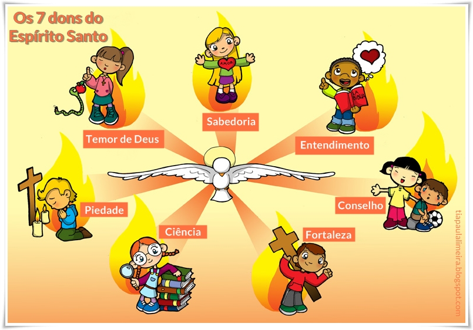

Os sete dons do Espírito Santo
Estes dons são graças de Deus e, só com nosso esforço, não podemos fazer com que cresçam e se desenvolvam.
Necessitam de uma ação direta do Espírito Santo para podermos atuar dentro da virtude e perfeição cristã.
No Espírito Santo, Terceira Pessoa da Santíssima Trindade, reside o Amor Supremo entre o Pai e o Filho.
Foi pelo Divino Espírito Santo que Deus se encarnou no seio de Maria Santíssima, trazendo Jesus ao mundo para
nossa salvação. Peçamos à Maria, esposa do Espírito Santo, que interceda por nós junto a Deus concedendo-nos a
graça de recebermos os divinos dons, apesar de nossa indignidade, de nossa miséria. Nas Escrituras, o próprio Jesus
quem nos recomenda: “Pedi e se vos dará. Buscai e achareis. Batei e vos será aberto” (Mt VII, 7s).
1 – Fortaleza
Por essa virtude, Deus nos propicia a coragem necessária para enfrentarmos as tentações, vulnerabilidade diante
das circunstâncias da vida e também firmeza de caráter nas perseguições e tribulações causadas por nosso testemunho cristão.
Lembremo-nos que foi com muita coragem, com muito heroísmo, que os santos desprezaram as promessas, as blandícias e ameaças do mundo.
Destes, muitos testemunharam a fé com o sacrifício da própria vida. O Espírito Santo lhes imprimiu o dom da Fortaleza
e só isto explica a serenidade com que encontraram a morte! Que luta gloriosa não sustentaram! Agora gozam de perfeita paz,
em união íntima com Jesus, de cuja glória participam. Também nós, havemos de combater diariamente para alcançar a coroa eterna.
Vivemos num mundo cheio de perigos e tentações. A alma acha-se constantemente envolta nas tempestades de paixões revoltadas.
Maus exemplos pululam e as inclinações do coração constantemente dirigem-se para o mal. Resistir a tudo isto requer em primeiro
lugar muita oração, força de vontade e combate resoluto. Por esta virtude, a alma se fortalece para praticar toda a classe de atos heróicos,
com invencível confiança em superar os maiores perigos e dificuldades com que nos deparamos diariamente. Nos ajuda a não cair nas tentações
e ciladas do demônio.
2 – Sabedoria
O sentido da sabedoria humana reside no reconhecimento da sabedoria eterna de Deus, Criador de todas as coisas que distribui seus
dons conforme seus desígnios. Para alcançarmos a vida eterna devemos nos aliar a uma vida santa, de perfeito acordo com os mandamentos
da lei de Deus e da Igreja. Nisto reside a verdadeira sabedoria que, como os demais, não é um dom que brota de baixo para cima, jamais
será alcançada por esforço próprio. É um dom que vem do alto e flui através do Espírito Santo que rege a Igreja de Deus sobre a terra.
Nos permite entender, experimentar e saborear as coisas divinas, para poder julgá-las retamente.
3 – Ciência
Nos torna capazes de aperfeiçoar a inteligência, onde as verdades reveladas e as ciências humanas perdem a sua inerente complexibilidade.
Nossas habilidades com as coisas acentuam-se progressivamente em determinadas áreas, conforme nossas inclinações culturais e científicas,
sempre segundo os desígnios divinos, mesmo que não nos apercebamos disso. Todo o saber vem de Deus. Se temos talentos, deles não nos devemos
orgulhar, porque de Deus é que os recebemos. Se o mundo nos admira, bate aplausos aos nossos trabalhos, a Deus é que pertence esta glória,
a Deus, que é o doador de todos os bens.
4 – Conselho
Permite à alma o reto discernimento e santas atitudes em determinadas circunstâncias. Nos ajuda a sermos bons conselheiros,
guiando o irmão pelo caminho do bem. Hoje, mais do que nunca está em foco a educação da mocidade e todos reconhecem também a
importância do ensino para a perfeita formação da criança. As dificuldades internas e externas, materiais e morais, muitas vezes
passam pelo dom do Conselho, sem disto nos apercebermos. É uma responsabilidade, portanto, cumprir a vontade de Deus que destinou
o homem para fins superiores, para a santidade. Para que possamos auxiliar o próximo com pureza e sinceridade de coração, devemos
pedir a Deus este precioso dom, com o qual O glorificaremos aos mostrarmos ao irmão as lições temporais que levam ao caminho da salvação.
É sob a influência deste ideal que a mãe ensina o filhinho a rezar, a praticar os primeiros atos das virtudes cristãs, da caridade,
da obediência, da penitência, do amor ao próximo.
5 – Entendimento
Torna nossa inteligência capaz de entender intuitivamente as verdades reveladas e naturais, de acordo com o fim sobrenatural que possuem.
A aparente correlação não significa que quem possui a sabedoria, já traga consigo o entendimento por consequência (ou vice-versa).
Existe uma clara distinção entre um e o outro. Para exemplificar: Há fiéis que entendem as contemplações do terço, mas o rezam por
obrigação ou mecanicamente (Possuem o dom do entendimento). Há outros que, por sua simplicidade, nunca procuraram entender o seu significado,
mas praticam sua reza com sabor, devoção e piedade, ignorando seu vasto sentido (possuem o dom da Sabedoria). Este exemplo, logicamente,
se aplica às ciências naturais e divinas, logo ao nosso dia-a-dia. Não sendo um consequência do outro, são distintamente preciosos e
complementam-se mutuamente, nos fazem aproximar de Deus com todas as nossas forças, com toda a nossa devoção e inteligência e sensível
percepção das coisas terrenas, que devem estar sempre direcionadas às coisas celestes.
6 – Piedade
É uma graça de Deus na alma que proporciona salutares frutos de oração e práticas de piedade ensinadas pela Santa Igreja.
Nos dias de hoje, considerando a população mundial, há poucas, muito poucas pessoas que acham prazer em serem devotas e piedosas;
as poucas que o são, tornam-se geralmente alvo de desprezo ou escárnio de pessoas que tem outra compreensão da vida. Realmente,
é grande a diferença que há entre um e outro modo de viver. Resta saber qual dos dois satisfaz mais à alma, qual dos dois mais
consolo lhe dá na hora da morte, qual dos dois mais agrada a Deus. Não é difícil acertar a solução do problema. Num mundo materialista
e distante de Deus, peçamos a graça da piedade, para que sejamos fervorosos no cumprimento das escrituras.
7 – Temor de Deus
Teme a Deus quem procura praticar os seus mandamentos com sinceridade de coração. Como nos diz as Escritura, devemos buscar
em primeiro lugar o reino de Deus, e o resto nos será dado por acréscimo. O mundo muitas vezes sufoca e obscurece o coração.
Todas as vezes que transigências fizemos às tentações, com certeza desprezamos a Deus Nosso Senhor. Quantas vezes preferimos a
causa dos bens miseráveis deste mundo e esquecemo-nos de Deus! Quantas vezes tememos mais a justiça dos homens do que a
justiça de Deus! Santo Anastácio a este respeito dizia: “A quem devo temer mais, a um homem mortal ou a Deus, por quem
foram criadas todas as coisas?”. Não esqueçamos, portanto, de pedir ao Deus Espírito Santo a graça de estarmos em sintonia
diária com os preceitos do Criador. Por este divino dom, torna-se Deus a pessoa mais importante em nossa vida, onde a alma
docemente afasta-se do erro pelo temor em ofendê-Lo com nossos pecados.